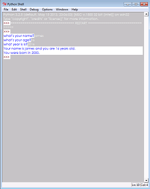
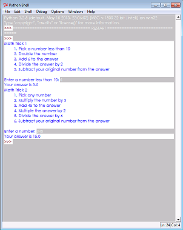
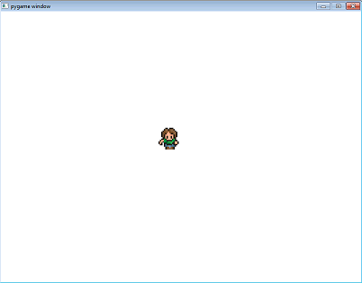
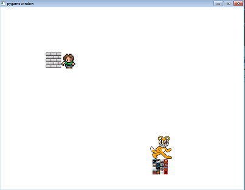
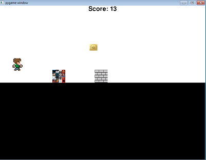
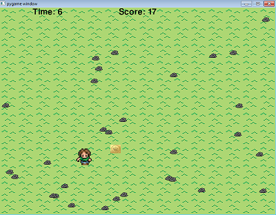
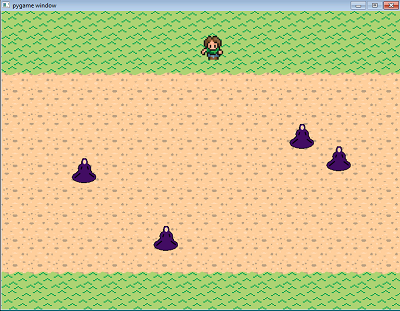

In unit 1 we learned the basics of python. We learned how to create variables, print things, do math, methods, import other files, and convert between string and integers.
Variables Lab
In the variables lab we learned how to print statements and take user input. We asked the user questions, took their input and printed it back to them along with doing some math to calculate the year they were born.

Math Trick Lab
In the math trick lab we learned how to deal with variables and how to do math in python. The goal of the lab was to take a number inputed by the user and plug that number into a formula that would always return the number as either 3, in the first one, or 15, in the second one.

Person Lab
In the Person lab we had to create a person file and then import the person file into a runner file. Then we bound keys to the characters movement so it would move when the kay was pressed. Lastly we drew the character on the screen so it would appear when the program was run

Unit 2
In unit 2 we focused a lot on using pygame. We learned how to create conditional staements, collisions, makeing object move and printing in pygame.
Wall Lab
In the wall lab we learned how to create collisions between objects. We made a wall and a person that was controlled with the arrow keys. When the person collided with the wall it would stop moving.

Hopper Lab
In the hopper lab we had to create a hopper that would jump over the walls. The wall would move across the screen and would get faster each time. If you collided with the wall the game would end, but if you jumped over it you would get a point. There was another wall that would deduct poins if you touched it and there was a coin that if you touched it you would gain points. If your points were below zero you would also lose.

Unit 3
In unit 3 we focused on the different types of loops (while, for/for each), random numbers, creating text, creating shapes and changing their colors, creating custom backgrounds and creating timers.
Ground Lab
In this lab we created a background from a sprite and then randomly placed rocks on it. Next we created text that displayed the score. Then we creayed a person that would move around on the screen. Net we created a coin that when the person collided with it, it would add one point to the score and then move to a random spot. The goal was to get 20 coins. Lastly we created a timer that lasted for 30 seconds. If you didn't collect all of the coins by the time the timer ran out you would loose.

Unit 4
In unit 4 we focused on lists. We learned how to use lists to create a character who would change their costume depending on what way they were moving. We also learned how to create backgrounds using lists by having the different tiles of the background draw depending on an if statement.
Dodge Lab
In this lab we created a background of different tiles using lists. We also used lists to create enemies that would appear at a random spot and move across the screen. There would be a random amount of enemies on the screen at any given moment. The goal of the game was to get across the road with out running into any of the enemies.

Final Project
For the final project we had to create a game using all of the concepts we had learned from units 1-4.
Dungeon Crawler
For my final project I created a game where you would have to kill an endless amoung of enemies that would increasingly get harder as you killed more of them. For this project i made different tiles for the background that I put in a list and drew depending on where it was. I also created an enemy with different sprites so that depending on what direction it was moving the costume would change. The main character also had changing costumes. The main character had different attacks that would do different things. There was also a limited amount of magic the player would have per turn. There was also music and sound effects that were added to the game.